Core Competencies Glossary
All core competencies can be assigned into one of four categories: Values, Skills, Stewardship<, and Results. Click a competency below to see a short description and growth indicators. Clicking one of the card images will zoom it in and make the image more easily visible.
Values | Valores
Act with curiosity and bravery, share bold ideas, and embrace both experimentation and the inevitable mistakes that come with trying something new.
Is passionate about possibility and recognizes paths for emergence of new ideas and processes
Sets clear, but kind boundaries
Invites sharing and celebration of wild ideas along with the mistakes that will come when trying them
Pursue learning through deliberate action, balance reflection with progress, and work steadily toward long-term goals despite challenges.
Designs a personal learning pathway; co-creates opportunities for learning
Balances quick action with thoughtful reflection
Listen deeply to others’ experiences, and create opportunities that center the voices of the people and communities you are working with.
Actively seeks insight from the experience and perspective of others
Connects with people from a place of love, respect and curiosity
Step into uncertainty with openness, ask for support and feedback, and own your learning and growth with honesty and courage.
Seeks help, feedback and collaboration
Owns where they are and what they need to learn
Embrace change, pivot with intention, and stay open to evolving paths and outcomes.
Shows an ability and willingness to pivot and course correct, and stay open to what the process and results look like
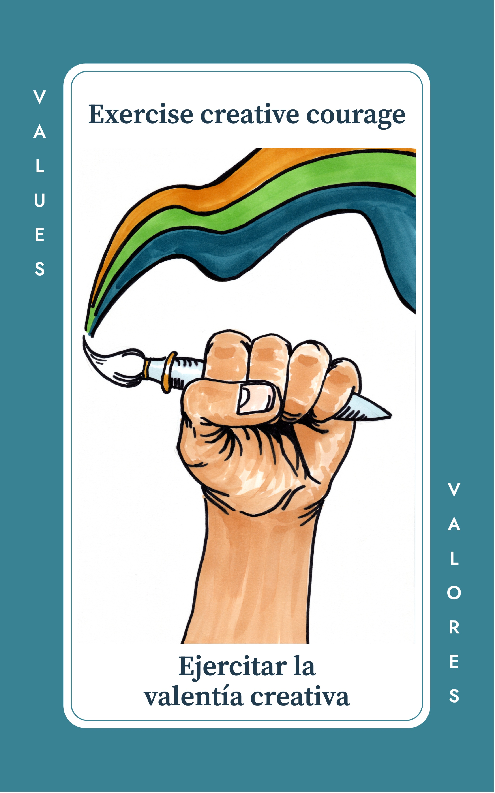 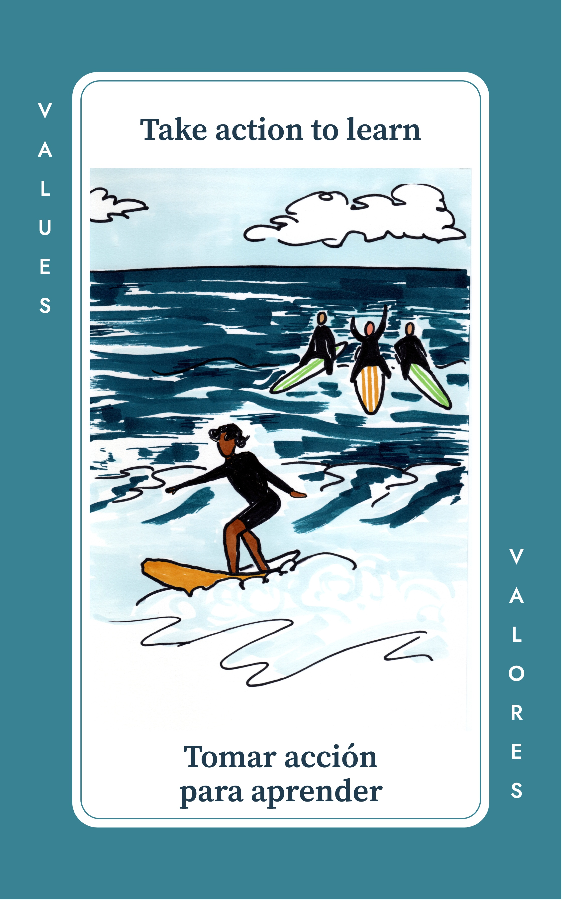 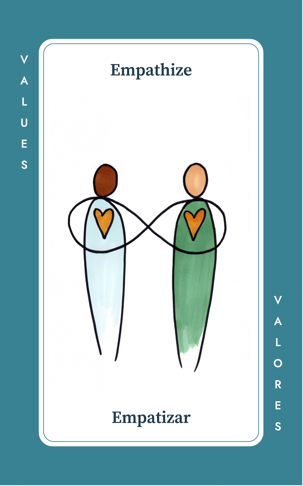 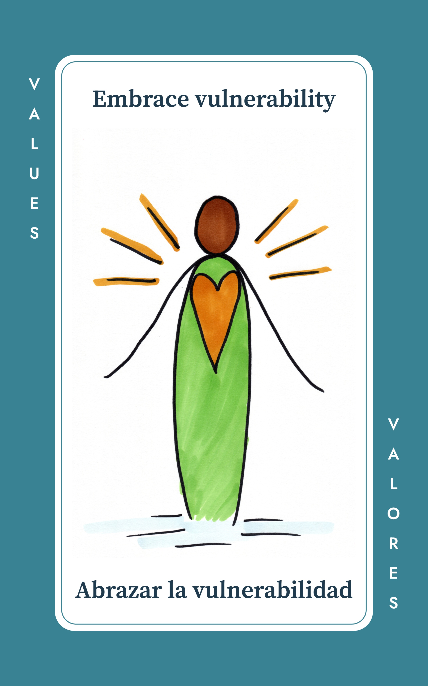 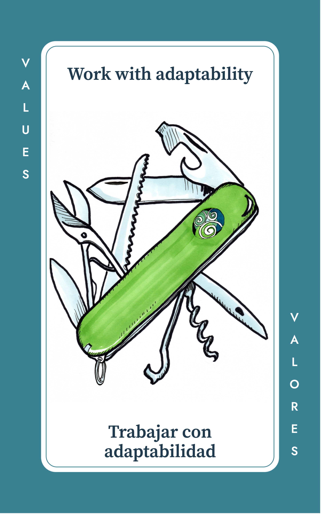


Skills | Habilidades
Passionately co-creates an inspiring vision, translate it into clear agreements and goals, and follow through with disciplined prioritization and daily execution.
Passionately co-creates an inspiring vision, shares the big picture, and follows through to execution of vision
Creates clear team agreements, goals, expectations, and co-constructed narratives
Takes ownership across all levels of work in realizing the vision, demonstrating the ability to strategize, prioritize, organize, and manage tasks and key milestones
Speak and write openly, honestly, and with compassion, keeping messages clear, timely, and accessible.
Adapts language, tone, and style to different audiences and contexts to connect effectively across differences
Communicates with authentic candor and compassion, sharing truth while owning their impact on others
Shares information consistently and in a timely manner to maintain alignment, and when out of alignment to name it and address it in real time
Models excellent writing skills and professional email correspondence
Expresses ideas clearly and concisely, making complex concepts accessible
Step up to lead where opportunities arise and create space for others to lead, share power, and break down top-down structures through collaboration.
Actively creates space for others to lead and contribute, recognizing diverse strengths
Identifies need and steps into leadership, taking initiative to move work forward
Shares decision-making to distribute authority and fosters shared ownership
Delegates thoughtfully, assigning tasks and responsibilities in ways that build skills, empower others, and foster shared accountability
Seek diverse perspectives, connect insights across sources, and generate questions and conclusions to understand how systems work.
Identifies patterns and root causes by questioning assumptions and analyzing complex problems across systems
Transforms complexity into clarity by integrating diverse data and perspectives into actionable insights and decisions
Profficient in utilizing various technological tools and platforms, both current and emergent.
Open to learning and exploring new technological tools, systems, and processes
Utilizes technological tools and platforms efficiently and effectively to fulfill the objectives at hand
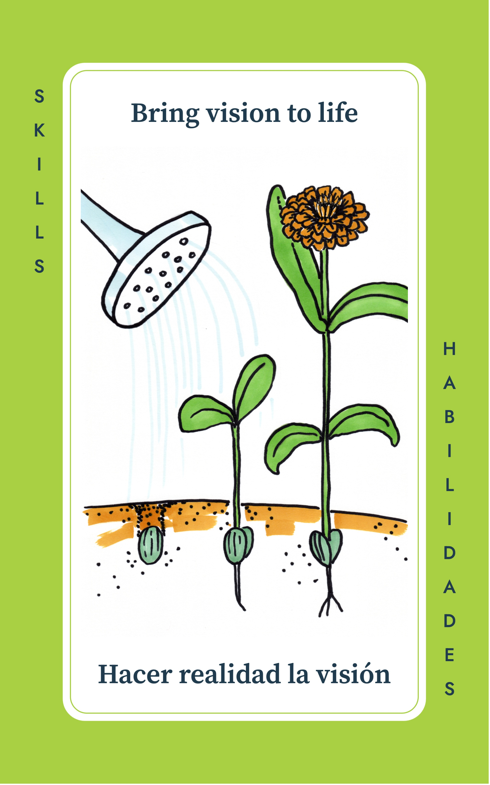 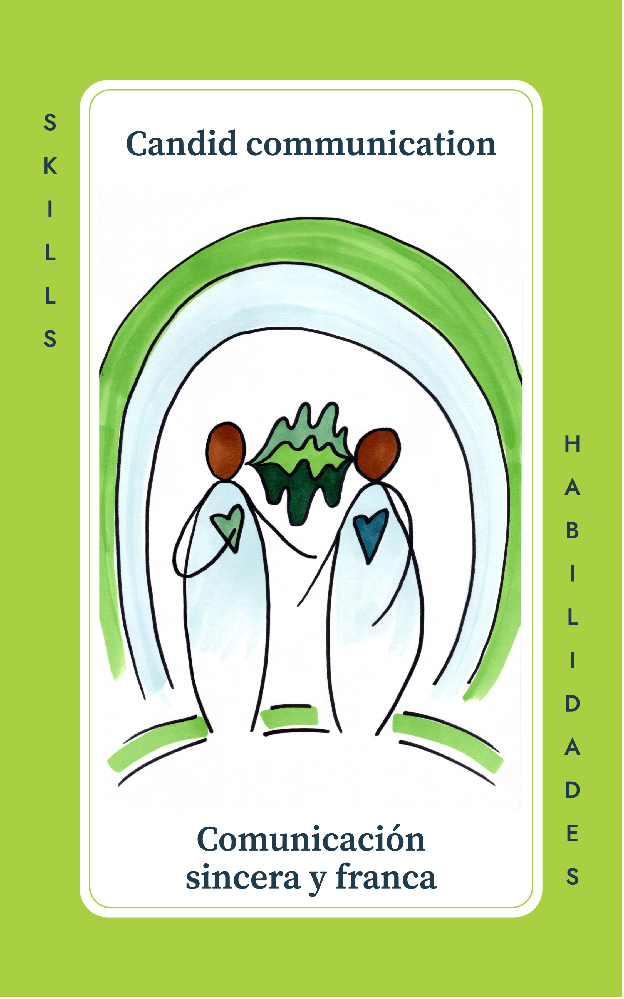 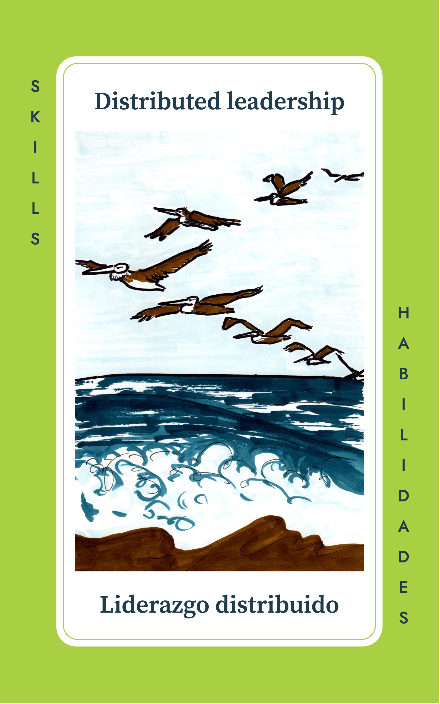 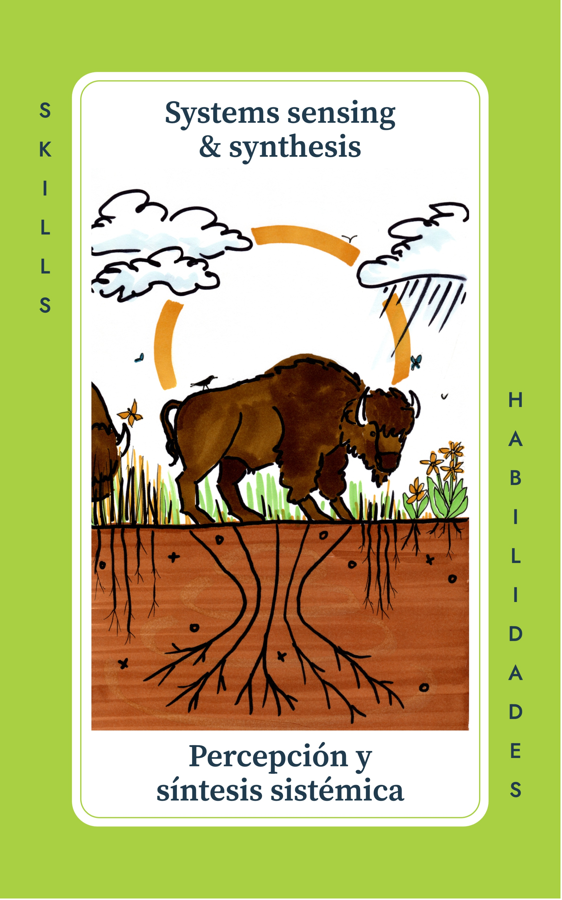 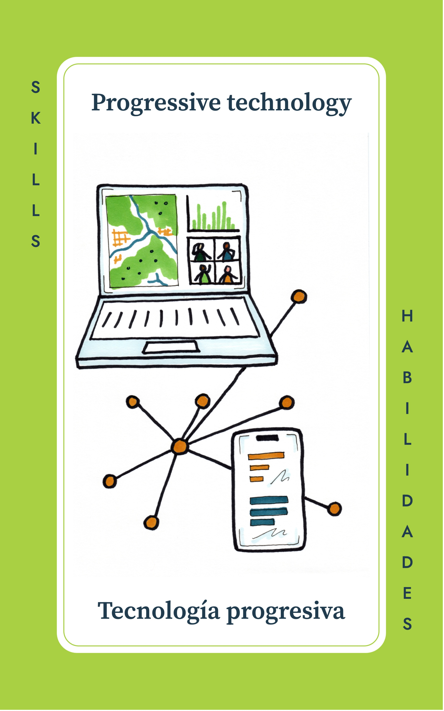


Stewardship | Fortalecimiento
Stay fully present, ask open-ended questions, listen for story and possibility, and build on others’ ideas while centering voices that are often unheard.
Actively listens to, demonstrates understanding and builds on the thoughts and ideas of others
Asks open ended questions, not leading questions
Embraces the silent space
Build mutual respect and understanding by meeting people where they are, investing in relationships with intention and patience, and recognizing that collaborative processes are nonlinear.
Is transparent and authentic about realistic process and outcomes, and follows through on commitments
Pauses when there is conflict to for mediation and to ensure resolution before continuing the work
Recognized and embraces nonlinear nature of the work including forward and backward steps
Sit with uncertainty and discomfort, avoid quick fixes, and create space for thoughtful sense-making before acting.
Builds comfort with the mess and avoids the quick fix
Creates opportunities for sense making before decision making
Reflect on system dynamics, co-create ways to shift imbalances, and design spaces that share power rather than concentrate it.
Creates spaces and structures that distribute power rather than concentrate it
Pauses to reflect on team and system dynamics, and personal power and influence
Share knowledge openly, co-create goals and agreements, and mentor and support others to strengthen collective leadership.
Shares knowledge, resources, and lessons learned to build capacity in others
Practices transparency and non-attachment when sharing with collaborators
Provides coaching, mentoring, or constructive feedback that supports the development new skills and greater confidence
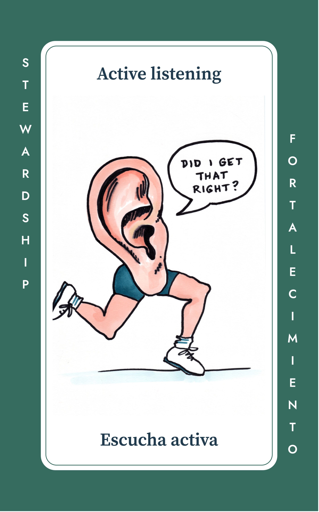 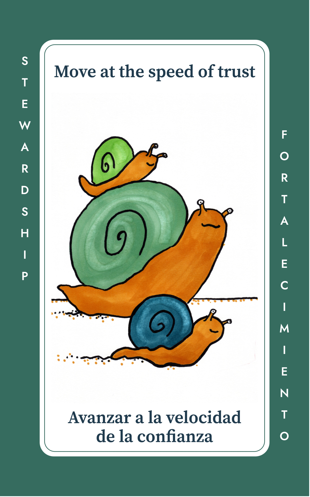 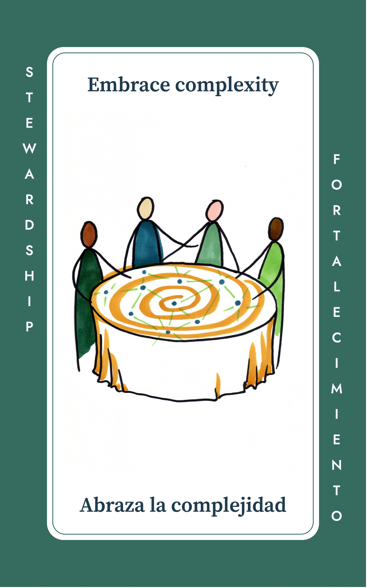 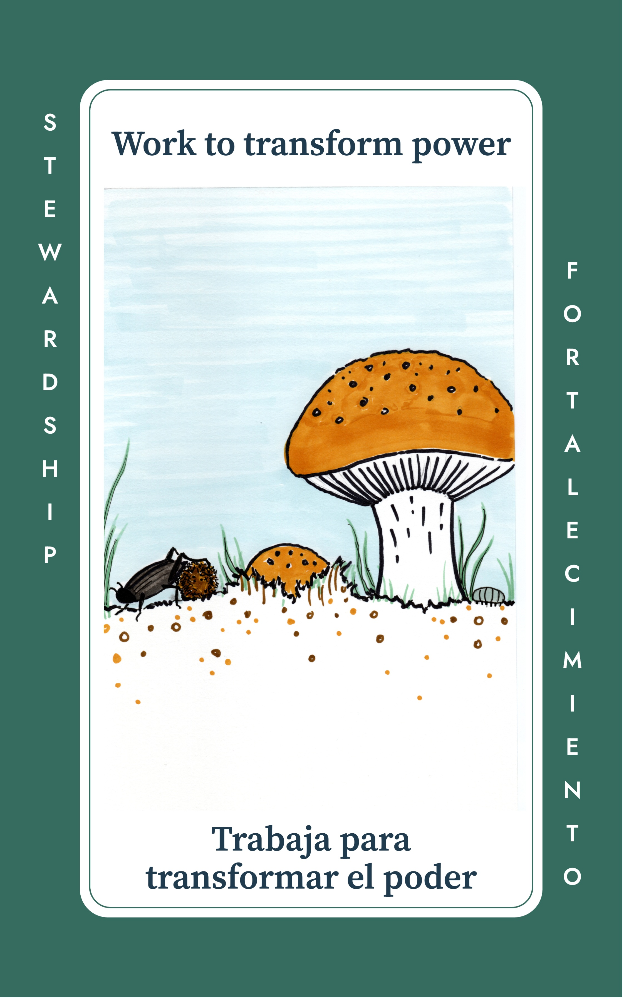 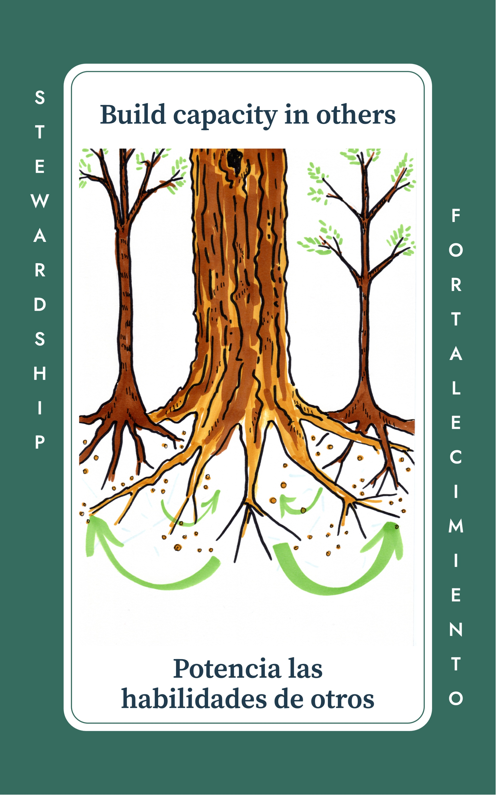


Results | Resultados
Produce work that meets high standards and take accountability when outcomes fall short.
Content, deliverables and design are high quality
Completes tasks accurately and on time, ensuring records, documentation, and processes are organized, accessible, and support smooth organizational operations
Takes accountability where results fall short
Collective priorities are translated into clear milestones, and measurable progress toward long-term goals is consistently demonstrated
Release what’s done, stay curious about what’s next, and iterate openly with team to keep evolving.
Demonstrates ability to let go and liberate what comes next
Maintains open communication and reflection with team
Celebrate successes, share key learnings, and capture work in ways that inspire learning, replication, and broader impact.
Celebrates the successes
Stories and lived experiences are shared in ways that deepen engagement with people, place, mission, and purpose
Creative approaches are used to make knowledge, lessons, and complex ideas memorable and accessible
Stories preserve and transmit history, lived experience, ecological memory, and cultural identity across communities and generations
Builds models and documents work for wide-spread recycling, learning and use
Achieves large-scale goals that integrate a collective of diverse interests over time.
Collective priorities are translated into clear milestones, and measurable progress toward long-term goals is consistently demonstrated
Ensure an experience of belonging, access and opportunity externally and internally.
Shares credit and recognition broadly, ensuring contributions are visible across all levels and identities
Team members and partners consistently report feeling valued, included, and able to contribute fully
Barriers to participation (structural, cultural, or logistical) are reduced or eliminated, resulting in broader and more diverse engagement
The collective strengths of the team are give space to shine and opportunities for growth are offered resulting in stronger leadership.
Team members’ skills, expertise, and perspectives are utilized in ways that improve the quality, efficiency, and impact of team outcomes
Team members gain new skills, confidence, responsibilities, or leadership opportunities as a result of coaching, feedback and knowledge sharing
The team demonstrates increased trust, shared ownership, and effectiveness in achieving goals, solving problems, and delivering results together
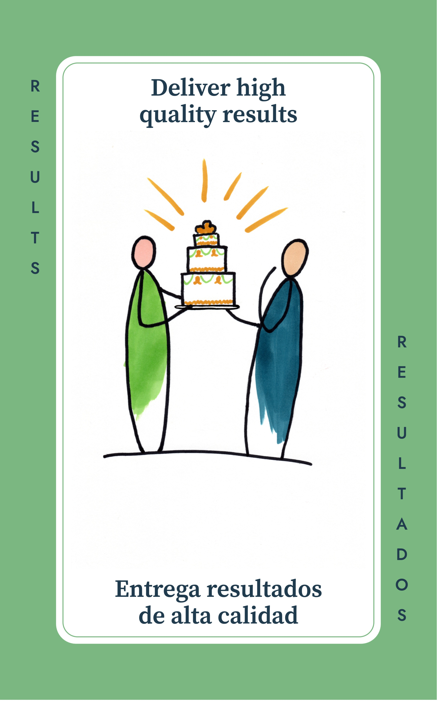 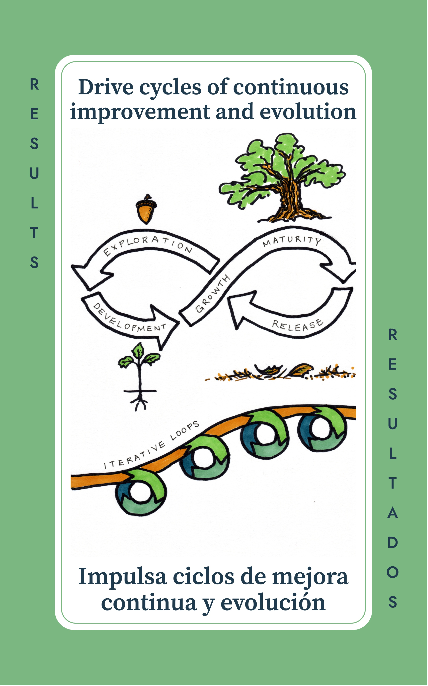 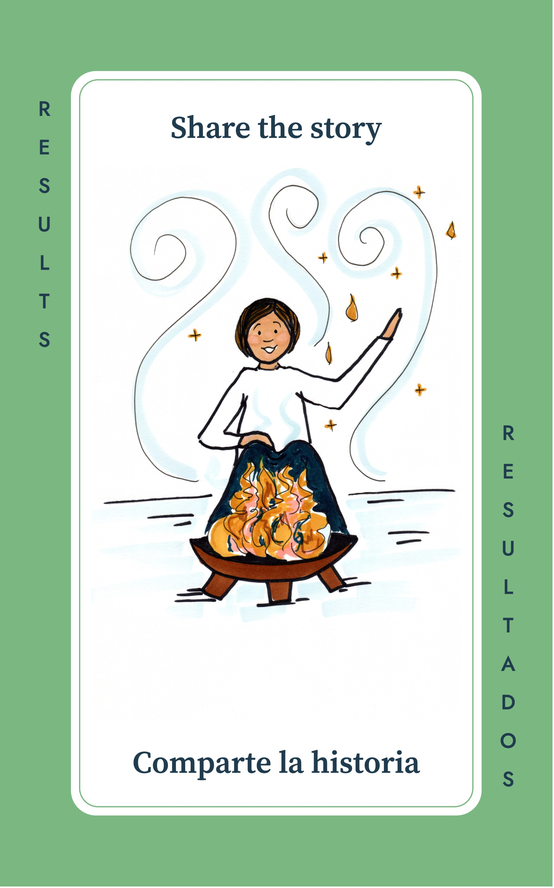 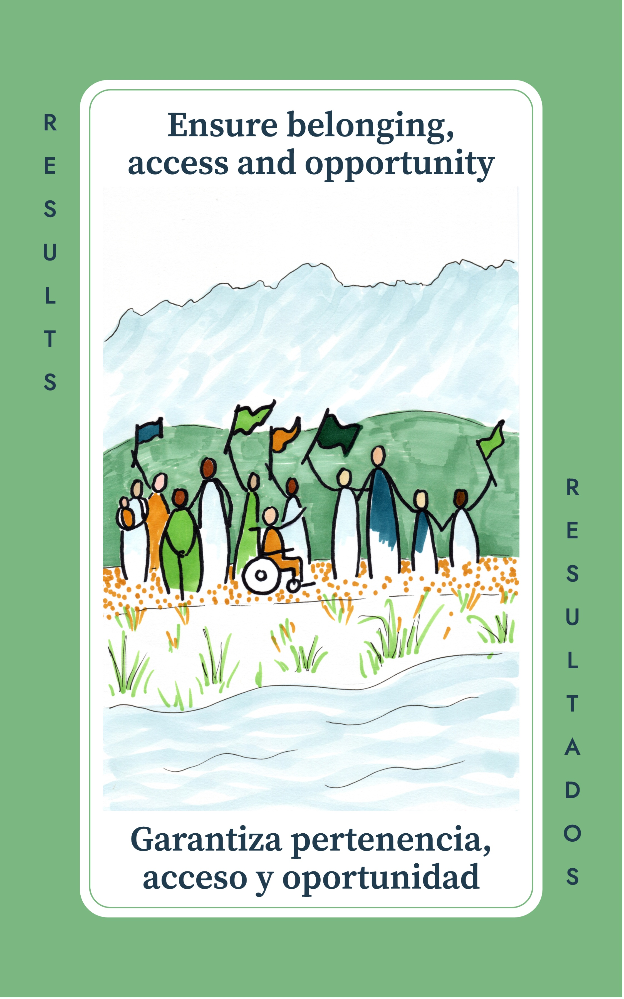 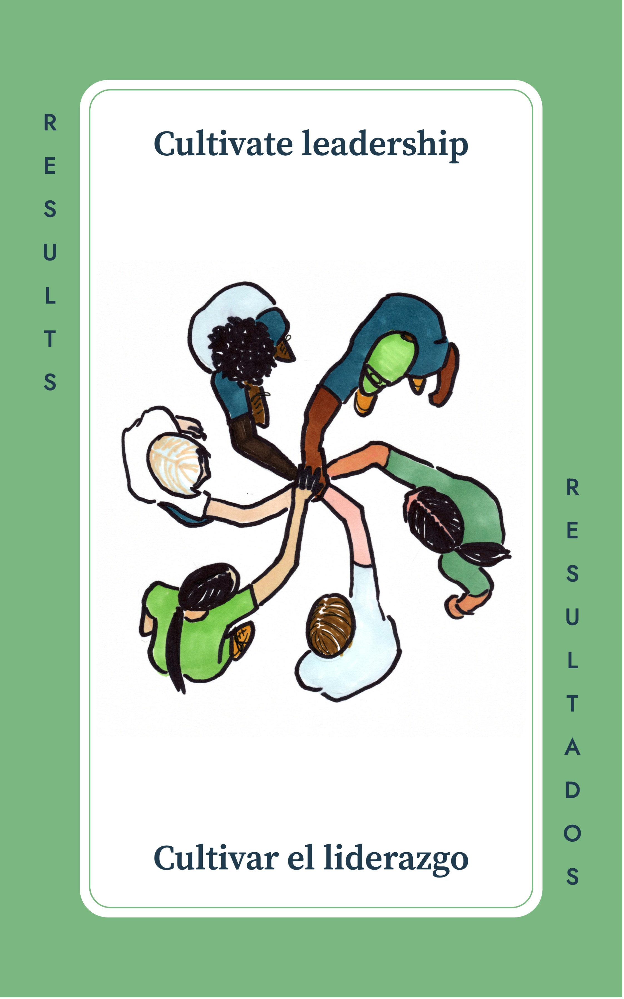